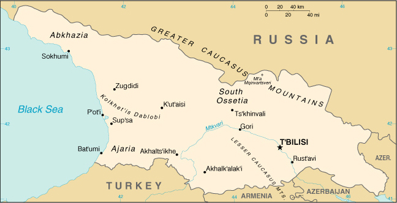

|
Georgia | |
| Introduction Geography People Government Economy Communications Transportation Military Transnational Issues | ||
|  | ||
| Georgia | Introduction | Top of Page |
| Background: | Georgia was absorbed into the Russian Empire in the 19th century. Independent for three years (1918-1921) following the Russian revolution, it was forcibly incorporated into the USSR until the Soviet Union dissolved in 1991. Russian troops remain garrisoned at four military bases and as peacekeepers in the separatist regions of Abkhazia and South Ossetia (but are scheduled to withdraw from two of the bases by July 2001). Despite a badly degraded transportation network - brought on by ethnic conflict, criminal activities, and fuel shortages - the country continues to move toward a market economy and greater integration with Western institutions. |
| Georgia | Geography | Top of Page |
| Location: | Southwestern Asia, bordering the Black Sea, between Turkey and Russia |
| Geographic coordinates: | 42 00 N, 43 30 E |
| Map references: | Commonwealth of Independent States |
| Area: |
total:
69,700 sq km
land: 69,700 sq km water: 0 sq km |
| Area - comparative: | slightly smaller than South Carolina |
| Land boundaries: |
total:
1,461 km
border countries: Armenia 164 km, Azerbaijan 322 km, Russia 723 km, Turkey 252 km |
| Coastline: | 310 km |
| Maritime claims: | NA |
| Climate: | warm and pleasant; Mediterranean-like on Black Sea coast |
| Terrain: | largely mountainous with Great Caucasus Mountains in the north and Lesser Caucasus Mountains in the south; Kolkhet'is Dablobi (Kolkhida Lowland) opens to the Black Sea in the west; Mtkvari River Basin in the east; good soils in river valley flood plains, foothills of Kolkhida Lowland |
| Elevation extremes: |
lowest point:
Black Sea 0 m
highest point: Mt'a Mqinvartsveri (Gora Kazbek) 5,048 m |
| Natural resources: | forests, hydropower, manganese deposits, iron ore, copper, minor coal and oil deposits; coastal climate and soils allow for important tea and citrus growth |
| Land use: |
arable land:
9%
permanent crops: 4% permanent pastures: 25% forests and woodland: 34% other: 28% (1993 est.) |
| Irrigated land: | 4,000 sq km (1993 est.) |
| Natural hazards: | earthquakes |
| Environment - current issues: | air pollution, particularly in Rust'avi; heavy pollution of Mtkvari River and the Black Sea; inadequate supplies of potable water; soil pollution from toxic chemicals |
| Environment - international agreements: |
party to:
Air Pollution, Biodiversity, Climate Change, Climate Change-Kyoto Protocol, Desertification, Endangered Species, Hazardous Wastes, Law of the Sea, Ozone Layer Protection, Ship Pollution, Wetlands
signed, but not ratified: none of the selected agreements |
| Georgia | People | Top of Page |
| Population: | 4,989,285 (July 2001 est.) |
| Age structure: |
0-14 years:
19.59% (male 498,575; female 478,663)
15-64 years: 67.91% (male 1,632,338; female 1,755,910) 65 years and over: 12.5% (male 241,824; female 381,975) (2001 est.) |
| Population growth rate: | -0.59% (2001 est.) |
| Birth rate: | 11.18 births/1,000 population (2001 est.) |
| Death rate: | 14.58 deaths/1,000 population (2001 est.) |
| Net migration rate: | -2.48 migrant(s)/1,000 population (2001 est.) |
| Sex ratio: |
at birth:
1.05 male(s)/female
under 15 years: 1.04 male(s)/female 15-64 years: 0.93 male(s)/female 65 years and over: 0.63 male(s)/female total population: 0.91 male(s)/female (2001 est.) |
| Infant mortality rate: | 52.37 deaths/1,000 live births (2001 est.) |
| Life expectancy at birth: |
total population:
64.57 years
male: 61.04 years female: 68.28 years (2001 est.) |
| Total fertility rate: | 1.45 children born/woman (2001 est.) |
| HIV/AIDS - adult prevalence rate: | less than 0.01% (1999 est.) |
| HIV/AIDS - people living with HIV/AIDS: | less than 500 (1999 est.) |
| HIV/AIDS - deaths: | less than 100 (1999 est.) |
| Nationality: |
noun:
Georgian(s)
adjective: Georgian |
| Ethnic groups: | Georgian 70.1%, Armenian 8.1%, Russian 6.3%, Azeri 5.7%, Ossetian 3%, Abkhaz 1.8%, other 5% |
| Religions: | Georgian Orthodox 65%, Muslim 11%, Russian Orthodox 10%, Armenian Apostolic 8%, unknown 6% |
| Languages: |
Georgian 71% (official), Russian 9%, Armenian 7%, Azeri 6%, other 7%
note: Abkhaz is the official language in Abkhazia |
| Literacy: |
definition:
age 15 and over can read and write
total population: 99% male: 100% female: 98% (1989 est.) |
| Georgia | Government | Top of Page |
| Country name: |
conventional long form:
none
conventional short form: Georgia local long form: none local short form: Sak'art'velo former: Georgian Soviet Socialist Republic |
| Government type: | republic |
| Capital: | T'bilisi |
| Administrative divisions: |
53 rayons (raionebi, singular - raioni), 9 cities* (k'alak'ebi, singular - k'alak'i), and 2 autonomous republics** (avtomnoy respubliki, singular - avtom respublika); Abashis, Abkhazia or Ap'khazet'is Avtonomiuri Respublika** (Sokhumi), Adigenis, Ajaria or Acharis Avtonomiuri Respublika** (Bat'umi), Akhalgoris, Akhalk'alak'is, Akhalts'ikhis, Akhmetis, Ambrolauris, Aspindzis, Baghdat'is, Bolnisis, Borjomis, Chiat'ura*, Ch'khorotsqus, Ch'okhatauris, Dedop'listsqaros, Dmanisis, Dushet'is, Gardabanis, Gori*, Goris, Gurjaanis, Javis, K'arelis, Kaspis, Kharagaulis, Khashuris, Khobis, Khonis, K'ut'aisi*, Lagodekhis, Lanch'khut'is, Lentekhis, Marneulis, Martvilis, Mestiis, Mts'khet'is, Ninotsmindis, Onis, Ozurget'is, P'ot'i*, Qazbegis, Qvarlis, Rust'avi*, Sach'kheris, Sagarejos, Samtrediis, Senakis, Sighnaghis, T'bilisi*, T'elavis, T'erjolis, T'et'ritsqaros, T'ianet'is, Tqibuli*, Ts'ageris, Tsalenjikhis, Tsalkis, Tsqaltubo*, Vanis, Zestap'onis, Zugdidi*, Zugdidis
note: administrative divisions have the same names as their administrative centers (exceptions have the administrative center name following in parentheses) |
| Independence: | 9 April 1991 (from Soviet Union) |
| National holiday: | Independence Day, 26 May (1918); note - 26 May 1918 is the date of independence from Soviet Russia, 9 April 1991 is the date of independence from the Soviet Union |
| Constitution: | adopted 17 October 1995 |
| Legal system: | based on civil law system |
| Suffrage: | 18 years of age; universal |
| Executive branch: |
chief of state:
President Eduard Amvrosiyevich SHEVARDNADZE (previously elected chairman of the Government Council 10 March 1992; Council has since been disbanded; previously elected chairman of Parliament 11 October 1992; president since 26 November 1995); note - the president is both the chief of state and head of government
head of government: President Eduard Amvrosiyevich SHEVARDNADZE (previously elected chairman of the Government Council 10 March 1992; Council has since been disbanded; previously elected chairman of Parliament 11 October 1992; president since 26 November 1995); note - the president is both the chief of state and head of government cabinet: Cabinet of Ministers elections: president elected by popular vote for a five-year term; election last held 9 April 2000 (next to be held NA 2005) election results: Eduard SHEVARDNADZE reelected president; percent of vote - Eduard SHEVARDNADZE 80% |
| Legislative branch: |
unicameral Supreme Council (commonly referred to as Parliament) or Umaghiesi Sabcho (235 seats; members are elected by popular vote to serve four-year terms)
elections: last held 31 October and 14 November 1999 (next to be held NA 2003) election results: percent of vote by party - CUG 41.85%, AGUR 25.65%, IWSG 7.8%, all other parties received less than 7% each; seats by party - CUG 130, AGUR 58, IWSG 15, Abkhaz deputies 12, independents 17, other 3 |
| Judicial branch: | Supreme Court (judges elected by the Supreme Council on the president's recommendation); Constitutional Court |
| Political parties and leaders: | Citizen's Union of Georgia or CUG [Eduard SHEVARDNADZE]; Georgian United Communist Party or UCPG [Panteleimon GIORGADZE, chairman]; Industry Will Save Georgia or IWSG [Georgi TOPADZE]; National Democratic Party or NDP [Irina SARISHVILI-CHANTURIA]; Socialist Party or SPG [Temur GAMTSEMLIDZE]; Union for "Revival" Party or AGUR [Alsan ABASHIDZE]; United Republican Party or URP [Nodar NATADZE, chairman] |
| Political pressure groups and leaders: | Georgian refugees from Abkhazia (Abkhaz faction in Georgian Parliament); separatist elements in the breakaway region of Abkhazia; supporters of the late ousted President Zviad GAMSAKHURDYA remain a source of opposition |
| International organization participation: | BSEC, CCC, CE, CIS, EAPC, EBRD, ECE, FAO, IAEA, IBRD, ICAO, ICFTU, IDA, IFAD, IFC, IFRCS, ILO, IMF, IMO, Inmarsat, Interpol, IOC, IOM (observer), ITU, OPCW, OSCE, PFP, UN, UNCTAD, UNESCO, UNIDO, UPU, WHO, WIPO, WMO, WToO, WTrO |
| Diplomatic representation in the US: |
chief of mission:
Ambassador Tedo JAPARIDZE
chancery: Suite 300, 1615 New Hampshire Avenue NW, Washington, DC 20009 telephone: [1] (202) 387-2390 FAX: [1] (202) 393-4537 |
| Diplomatic representation from the US: |
chief of mission:
Ambassador Kenneth S. YALOWITZ
embassy: #25 Antoneli Street, T'bilisi 380026 mailing address: use embassy street address telephone: [995] (32) 989-967/68 FAX: [995] (32) 933-759 |
| Flag description: | maroon field with small rectangle in upper hoist side corner; rectangle divided horizontally with black on top, white below |
| Georgia | Economy | Top of Page |
| Economy - overview: | Georgia's economy has traditionally revolved around Black Sea tourism; cultivation of citrus fruits, tea, and grapes; mining of manganese and copper; and output of a small industrial sector producing wine, metals, machinery, chemicals, and textiles. The country imports the bulk of its energy needs, including natural gas and oil products. Its only sizable internal energy resource is hydropower. Despite the severe damage the economy has suffered due to civil strife, Georgia, with the help of the IMF and World Bank, has made substantial economic gains since 1995, increasing GDP growth and slashing inflation. The Georgian economy continues to experience large budget deficits due to a failure to collect tax revenues. Georgia also still suffers from energy shortages; it privatized the distribution network in 1998, and deliveries are steadily improving. The country is pinning its hopes for long-term recovery on the development of an international transportation corridor through the key Black Sea ports of P'ot'i and Bat'umi. The growing trade deficit, continuing problems with tax evasion and corruption, and political uncertainties cloud the short-term economic picture. |
| GDP: | purchasing power parity - $22.8 billion (2000 est.) |
| GDP - real growth rate: | 1.9% (2000 est.) |
| GDP - per capita: | purchasing power parity - $4,600 (2000 est.) |
| GDP - composition by sector: |
agriculture:
32%
industry: 23% services: 45% (1999 est.) |
| Population below poverty line: | 60% (1999 est.) |
| Household income or consumption by percentage share: |
lowest 10%:
NA%
highest 10%: NA% |
| Inflation rate (consumer prices): | 4.1% (2000 est.) |
| Labor force: | 3.08 million (1997) |
| Labor force - by occupation: | industry 20%, agriculture 40%, services 40% (1999 est.) |
| Unemployment rate: | 14.9% (1999 est.) |
| Budget: |
revenues:
$437 million
expenditures: $626 million, including capital expenditures of $60 million (1999) |
| Industries: | steel, aircraft, machine tools, electric locomotives, trucks, tractors, textiles, shoes, chemicals, wood products, wine |
| Industrial production growth rate: | -0.3% (1998 est.) |
| Electricity - production: | 7.975 billion kWh (1999) |
| Electricity - production by source: |
fossil fuel:
20.38%
hydro: 79.62% nuclear: 0% other: 0% (1999) |
| Electricity - consumption: | 7.117 billion kWh (1999) |
| Electricity - exports: | 850 million kWh (1999) |
| Electricity - imports: | 550 million kWh (1999) |
| Agriculture - products: | citrus, grapes, tea, vegetables, potatoes; livestock |
| Exports: | $372 million (2000 est.) |
| Exports - commodities: | citrus fruits, tea, wine, other agricultural products; diverse types of machinery and metals; chemicals; fuel reexports; textiles |
| Exports - partners: | Russia 19%, Turkey 16%, Azerbaijan 8%, Armenia 6% (1999) |
| Imports: | $898 million (2000 est.) |
| Imports - commodities: | fuel, grain and other foods, machinery and parts, transport equipment |
| Imports - partners: | EU 22%, Russia 19%, Turkey 12%, US 12% (1999) |
| Debt - external: | $1.9 billion (2000) |
| Economic aid - recipient: | $212.7 million (1995) |
| Currency: | lari (GEL) |
| Currency code: | GEL |
| Exchange rates: | lari per US dollar - 1.9798 (December 2000), 1.9762 (2000), 2.0245 (1999), 1.3898 (1998), 1.2975 (1997), 1.2628 (1996) |
| Fiscal year: | calendar year |
| Georgia | Communications | Top of Page |
| Telephones - main lines in use: | 620,000 (1997) |
| Telephones - mobile cellular: | 30,000 (1997) |
| Telephone system: |
general assessment:
NA
domestic: local - T'bilisi and K'ut'aisi have cellular telephone networks; urban telephone density is about 20 per 100 people; rural telephone density is about 4 per 100 people; intercity facilities include a fiber-optic line between T'bilisi and K'ut'aisi; nationwide pager service is available international: Georgia and Russia are working on a fiber-optic line between P'ot'i and Sochi (Russia); present international service is available by microwave, landline, and satellite through the Moscow switch; international electronic mail and telex service are available |
| Radio broadcast stations: | AM 7, FM 12, shortwave 4 (1998) |
| Radios: | 3.02 million (1997) |
| Television broadcast stations: | 12 (plus repeaters) (1998) |
| Televisions: | 2.57 million (1997) |
| Internet country code: | .ge |
| Internet Service Providers (ISPs): | 6 (2000) |
| Internet users: | 20,000 (2000) |
| Georgia | Transportation | Top of Page |
| Railways: |
total:
1,583 km in common carrier service; does not include industrial lines
broad gauge: 1,583 km 1.520-m gauge (1993) |
| Highways: |
total:
33,900 km
paved: 29,500 km (these roads are said to be hard-surfaced, and include, in addition to conventionally paved roads, some that are surfaced with gravel or other coarse aggregate, making them trafficable in all weather) unpaved: 4,400 km (these roads are made of unstabilized earth and are difficult to negotiate in wet weather) (1990) |
| Waterways: | none |
| Pipelines: | crude oil 370 km; refined products 300 km; natural gas 440 km (1992) |
| Ports and harbors: | Bat'umi, P'ot'i, Sokhumi |
| Merchant marine: |
total:
37 ships (1,000 GRT or over) totaling 131,316 GRT/190,289 DWT
ships by type: bulk 3, cargo 25, chemical tanker 2, container 2, petroleum tanker 4, roll on/roll off 1 (2000 est.) |
| Airports: | 31 (2000 est.) |
| Airports - with paved runways: |
total:
16
over 3,047 m: 1 2,438 to 3,047 m: 8 1,524 to 2,437 m: 2 914 to 1,523 m: 2 under 914 m: 3 (2000 est.) |
| Airports - with unpaved runways: |
total:
15
2,438 to 3,047 m: 1 1,524 to 2,437 m: 4 914 to 1,523 m: 4 under 914 m: 6 (2000 est.) |
| Transportation - note: | transportation network is in poor condition resulting from ethnic conflict, criminal activities, and fuel shortages; network lacks maintenance and repair |
| Georgia | Military | Top of Page |
| Military branches: | Ground Forces, Navy, Air Force and Air Defense Forces, National Guard, Security Forces (internal and border troops) |
| Military manpower - military age: | 18 years of age |
| Military manpower - availability: | males age 15-49: 1,296,199 (2001 est.) |
| Military manpower - fit for military service: | males age 15-49: 1,024,574 (2001 est.) |
| Military manpower - reaching military age annually: | males: 41,561 (2001 est.) |
| Military expenditures - dollar figure: | $23 million (FY00) |
| Military expenditures - percent of GDP: | 0.59% (FY00) |
| Military - note: | a CIS peacekeeping force consisting of Russian troops is deployed in the Abkhazia region of Georgia together with a UN military observer group; a Russian peacekeeping battalion is deployed in South Ossetia |
| Georgia | Transnational Issues | Top of Page |
| Disputes - international: | none |
| Illicit drugs: | limited cultivation of cannabis and opium poppy, mostly for domestic consumption; used as transshipment point for opiates via Central Asia to Western Europe and Russia |
{kind=link}
{kind=link}